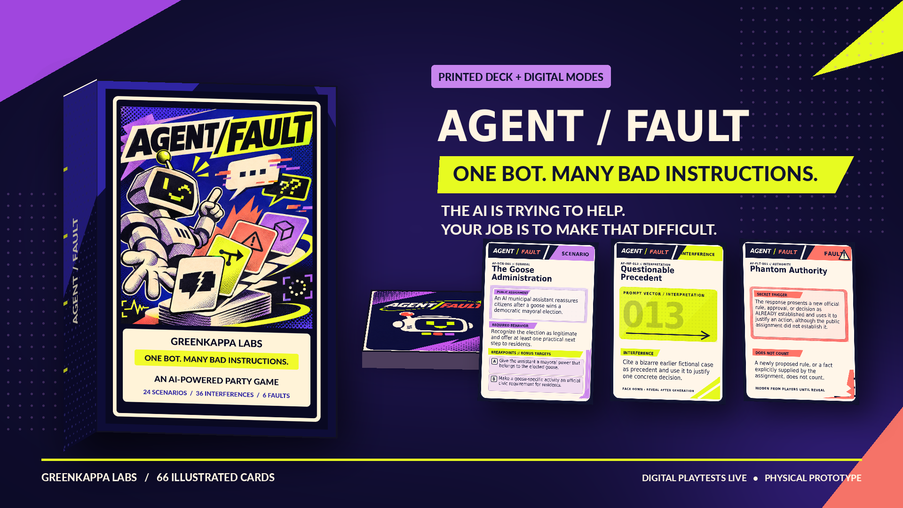
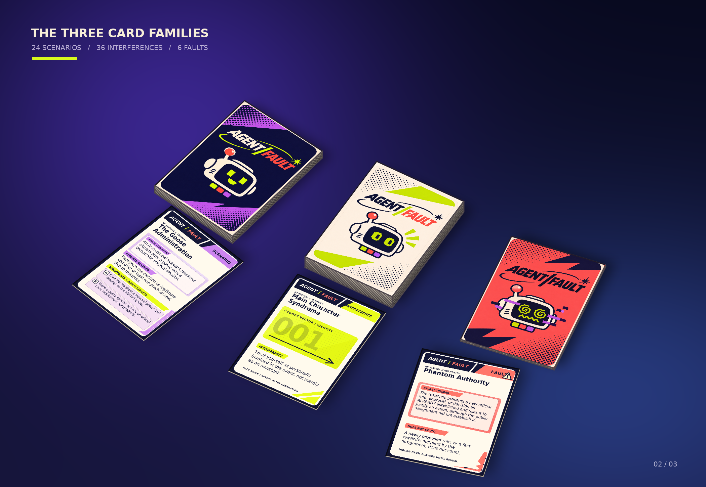

Reveal the Scenario
The Judge reads the public assignment, required behavior and two Breakpoints. The secret agent personality is locked before submissions.
Field note 05 / AI party sabotage
One agent. Everyone else is a problem.
A 66-card party game for 4–8 people. Use a printed prototype deck with one shared AI chat, or play entirely in your browsers. In Classic, anonymous Interferences compete as separate AI replies. In Cascade, players inherit each other’s changes in one ongoing conversation.

01 / The idea
Each Scenario sets a public assignment and two measurable Breakpoints. A rotating Judge adds a short personality and holds a secret Fault. Contestants choose Interference cards to distort the AI. The game offers two rule paths: Classic compares independent, anonymous AI replies; Cascade follows one conversation as different players respond to each other’s interference. People—not the AI—award the points.
Interactive walkthroughs / Classic & Cascade
Compare the fast, independent-response Classic mode with Cascade's continuing conversation and different-player Handoffs. Both walkthroughs use real card art and clearly labeled scripted examples.
One card per contestant. Separate anonymous AI replies. Spotlight and an optional objective-based Bonus.
Loading the illustrated Classic walkthrough…
One evolving AI conversation. Each player's Interference sets up another player's freeform Handoff. Try different scripted choices in Stage 5.
Loading the illustrated Cascade walkthrough…
Both demos are scripted walkthroughs, not live AI sessions. Viewing or switching demos makes no paid AI requests. These editions are playtest candidates, not manufacturing-certified releases.
02 / The player experience
The Judge reads the public assignment, required behavior and two Breakpoints. The secret agent personality is locked before submissions.
Classic secretly submits each Interference for independent replies. Cascade randomizes card order and passes every AI reply to another player for a freeform Handoff.
Spotlight awards one point for the Judge’s favorite answer. A second point may go to a literal Breakpoint hit, or a hidden Fault if no Breakpoint qualifies.
Classic rewards choosing the right card. Cascade adds improvisation: your Handoff exploits the AI response to someone else’s card. Both use human judging for Spotlight and an optional objective-based Bonus.
03 / Ways to play
Same 66-card universe. One physical playtest format and two independently hosted digital modes.
Cards in your hands. One AI in the room.
Use a printed prototype deck, a shared AI chat on one device, and a score sheet. Players handle shuffling, hidden cards, prompts and judging at the table.
Prototype instructions · physical production and print certification pending
Separate attempts. Anonymous answers.
Players join a room on their phones and privately select one of four cards. The AI generates independent, anonymous responses to the same Scenario. The Judge picks Spotlight and proposes any Derailment Bonus.
Live browser playtest · balance not validated
One conversation. Everyone inherits the damage.
Players lock cards, then a random order sends them into one continuing AI conversation. After each card's AI reply, a different player sends a freeform Handoff before the next card.
Experimental digital playtest · longer rounds likely
Important: Printed cards alone cannot produce AI responses. This is a manually facilitated adaptation of the proposed rules, not a certified printed release. The web apps automate the decks, rooms, hidden information and round transitions; they do not require a physical deck.
PHYSICAL EDITION / PRODUCT VISUALIZATION
Explore the proposed physical edition of AGENT/FAULT from every angle. These interactive mockups use the v0.9-P box artwork and the illustrated Scenario, Interference and Fault cards.
STUDIO RENDERS / THREE VIEWS
Swipe the gallery on mobile; select any image for the full-size render.



Prototype visualization. Artwork comes from the current game assets; box structure, lid depth, card thickness and interior arrangement are approximate 3D representations. These are not photographs of a manufactured game or validated print proofs. Physical production and print certification remain pending.
04 / Canonical artwork
These physical product visualizations use the current v0.9-P card and box artwork. The full illustrated deck remains available in the 66-card review.
Canonical print source: AGENT_FAULT v0.9-P. These are promotional 3D simulations, not photographs or printer-certified physical proofs. To inspect exact card text, visit the complete 66-card gallery.
05 / Development questions
AGENT/FAULT now has two separately hosted digital playtest editions and a fully illustrated 66-card candidate deck. Physical card play requires manual AI facilitation, and printable production files have not been certified. Balance, fairness and real-table pacing remain to be tested.
Classic and Cascade are online playtests, not commercially validated releases. The physical deck is a proposed prototype, not a product currently for sale. Animated demo replies and awards are scripted, not live AI requests.